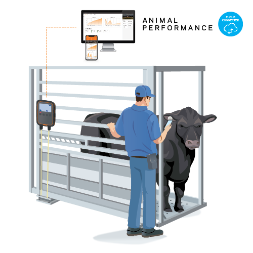

About Me
Hello! I'm Basavannayya C. Kulakarni, a dedicated and enthusiastic software developer from Haveri, Karnataka. I hold a Master’s degree in Computer Applications (MCA) from RV College of Engineering, completed in 2023 with a CGPA of 7.26, and a Bachelor’s degree (BCA) from KLE GH BCA College, Haveri.
My journey into tech began with a strong academic foundation, which I’ve built upon through real-world experience and continuous learning. After completing my MCA, I interned at PThings, where I worked on real-time development projects. I then joined a Python Full Stack Development course at Pentagon Space, gaining hands-on experience in Python, SQL, HTML, CSS, and JavaScript.
I’ve also worked on meaningful projects like the Livestock Weight Tracking System using React.js and MongoDB, aimed at helping farmers monitor livestock health. During my BCA, I developed a Smart Parking System using IoT and ThingSpeak, designed to reduce urban congestion.
I’m passionate about building practical solutions that make a difference and am always eager to explore new technologies.
Thank you for stopping by — I’m excited to share my work with you!
Technical Skills
- Programming:
Python, JavaScript, HTML, CSS - Frameworks:
Flask, Django, React - Database:
SQL, MongoDB - Tools:
Github, REST APIs, GitCopilot - Soft Skills:
Problem Solving, Communication
Education
Bachelor of Computer Applications 2017 - 2020
KLE's GH BCA
Collage,
Haveri
Bachelor of Computer Applications 2021 - 2023
RV Collage of Engineering,
Bangalore
Certifications
- Python Full-Stack Development.
- Certified in SQL Basics to Advanced on HackerRank.
Projects
üêÑ Livestock Tracker
Tech Stack: React.js, MongoDB, IoT (Sensors)
A real-time livestock monitoring system that tracks animal weight using IoT devices. Built with React.js for the frontend and MongoDB for scalable data storage. The dashboard updates in real-time, helping farmers monitor health metrics and reduce livestock loss.
- ✅ Enables farmers to detect weight loss early, preventing livestock illness or malnutrition.
- ✅ Improves farm management with live weight data and historical trends.
- ✅ Streamlines data collection via IoT instead of manual input.
üÖøÔ∏è Smart Parking System
Tech Stack: IoT, ThingSpeak, Embedded Systems

An IoT-based smart parking monitoring solution that visualizes real-time parking slot availability using ThingSpeak. Designed for efficient urban parking management, reducing congestion and time spent searching for parking.
- ✅ Provides live parking slot data to reduce traffic and improve user experience.
- ✅ Real-time visualization using ThingSpeak enhances accessibility and remote monitoring.
- ✅ Designed a simple, interactive interface to support mobile and web display.